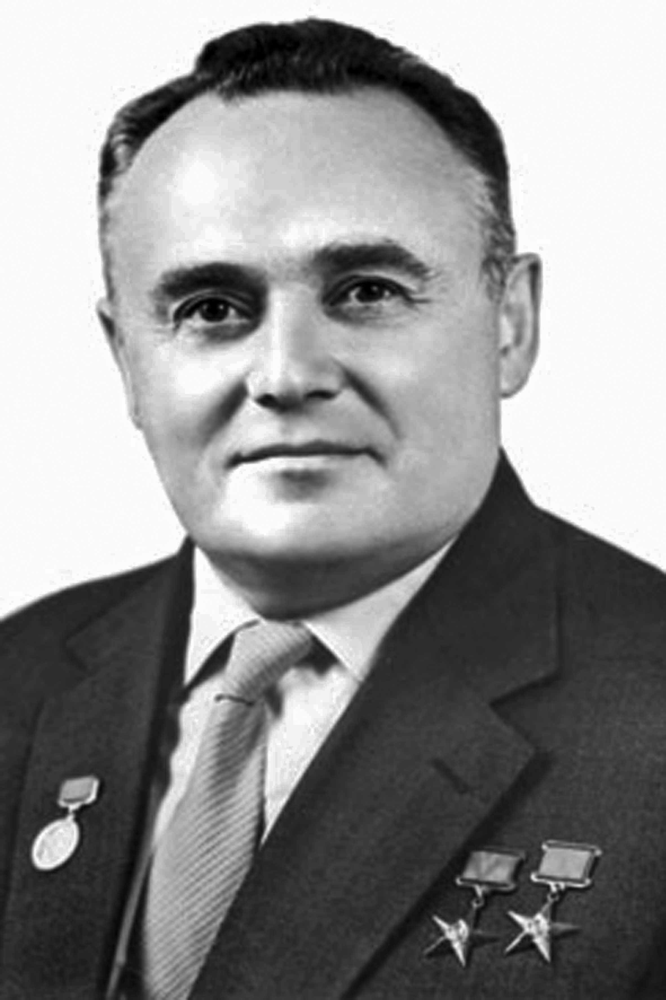

Сергей Королёв
Учёный, инженер, главный конструктор ракетно-космических систем СССР.

Мечта о звёздах
Сергей Павлович Королёв родился в 1907 году. Основную научную и инженерную работу он вёл в Москве, где возглавлял конструкторское бюро. С юности он увлекался авиацией и планеризмом. Но его главной страстью стало космическое пространство. Под его руководством Советский Союз первым запустил искусственный спутник Земли в 1957 году.
Первый человек в космосе
Именно Королёв руководил подготовкой и запуском корабля «Восток-1» с Юрием Гагариным на борту 12 апреля 1961 года. Он был душой всей советской космической программы.
А ты знал?
Долгое время имя Королёва было засекречено. В газетах его называли просто «главным конструктором». Весь мир узнал его имя только после его смерти.